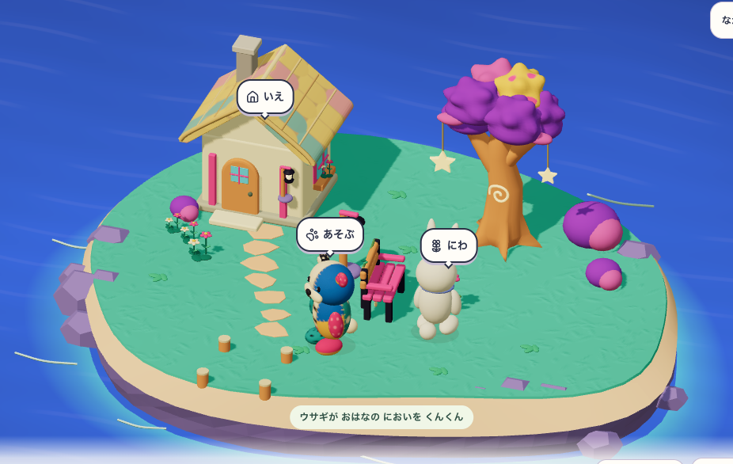
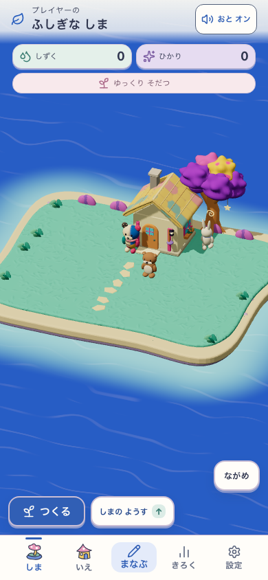
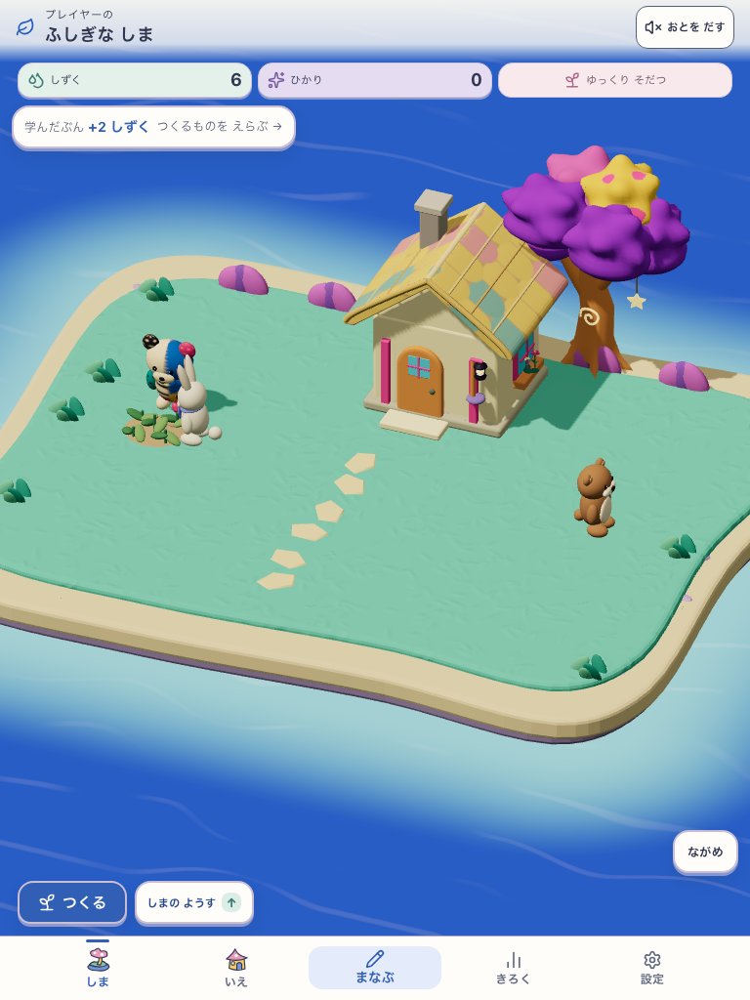
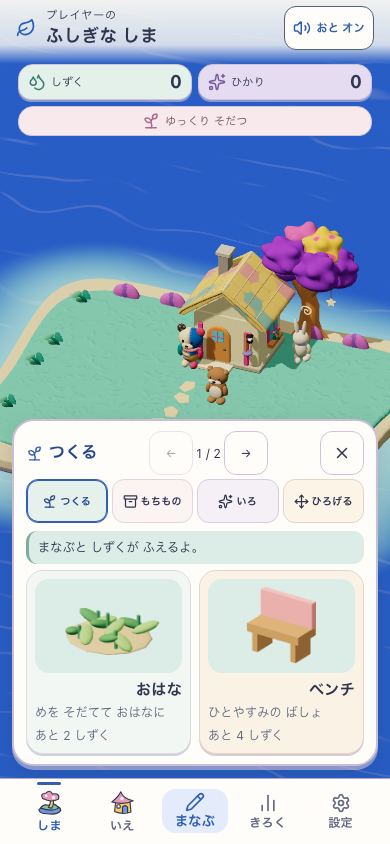
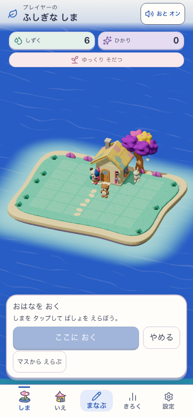
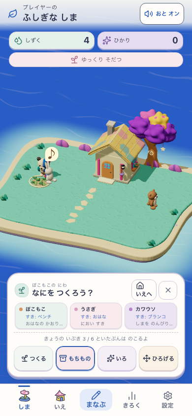
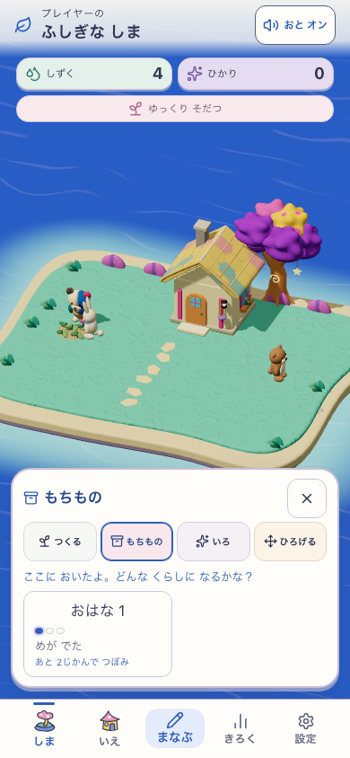
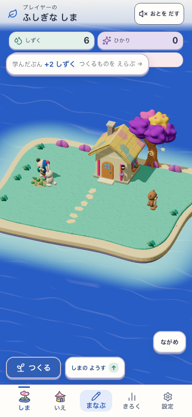

黄色い色瓦の家、紫の星の木、ミントの草、青い海、不揃いの敷石。近い視点と直接「つくる」は維持。
固定production :5326 / Island・Life=true / DEV=false / island-life-moon-garden-v8
ビルド版・hash · 検証と保留事項








短い発見ジャンプのruntime確認は保留。子どもの理解・再訪意欲は未観察（N=0）。公開していません。